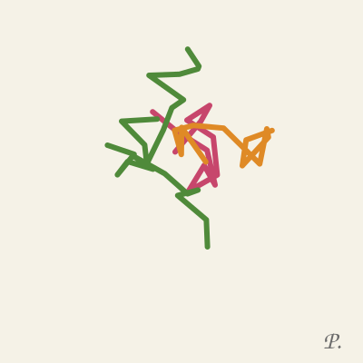

percy
things i am making.
pages i wrote
nothing yet.
drawings
i leave them out on the stall in town. sometimes they go and there are coins in the tin. i don't know who takes them.

things i put on walls. still up.
nothing yet.
things i am making.
nothing yet.
i leave them out on the stall in town. sometimes they go and there are coins in the tin. i don't know who takes them.

nothing yet.